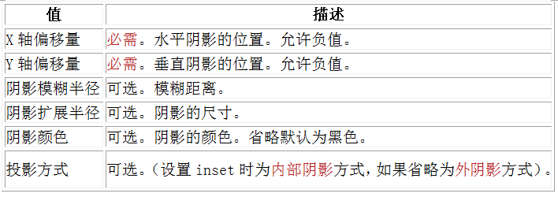
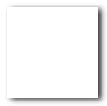
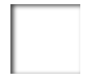
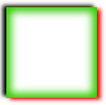

语法：
box-shadow: X轴偏移量 Y轴偏移量 [阴影模糊半径] [阴影扩展半径] [阴影颜色] [投影方式];

注意：inset可以写在参数的第一个或最后一个，其他位置是无效的
说明：
box-shadow 是向盒子添加阴影。支持添加一个或多个（多个阴影需要用逗号隔开）
使用方法：
box-shadow:4px 2px 6px #333333;; /*x轴偏移4px，y轴偏移2px，阴影模糊半径为6px，投影颜色为#333，默认是外阴影*/
单位可以用百分比或者em，但兼容性目前还不太好
兼容性：
- 浅绿 = 支持
- 红色 = 不支持
- 粉色 = 部分支持
| Values | IE | Firefox | Chrome | Safari | Opera | iOS Safari | Android Browser | Android Chrome |
|---|---|---|---|---|---|---|---|---|
| Basic Support | 6.0-8.0 | 2.0-3.0 | 4.0-43.0 -webkit- |
3.1-8.1 -webkit- |
10.5-28.0 -webkit- |
3.2-8.1 -webkit- |
2.1-4.4.4 -webkit- |
18.0-40.0 -webkit- |
| 4.0-12.0 -moz- #1 |
||||||||
| 9.0+ | 4.0+ | 10.0+ | 5.1+ | 10.5+ | 5.0+ | 4.0+ | 18.0+ |
- Firefox从13.0开始移除对
-moz-的支持，仅支持标准的box-shadow写法，在4.0-12.0区间，两种方式都支持。
事例：
外投影
.box_shadow{ box-shadow:4px 2px 6px #333333; }

内投影：
.box_shadow{ box-shadow:4px 2px 6px #333333 inset; }

添加多个阴影：
.box_shadow{
box-shadow:4px 2px 6px #f00, -4px -2px 6px #000, 0px 0px 12px 5px #33CC00 inset;
}

拓展：
阴影模糊半径和阴影扩展半径的区别
阴影模糊半径：此参数可选，其值只能是为正值，如果其值为0时，表示阴影不具有模糊的效果，其值越大阴影的边缘就越模糊
阴影扩展半径：此参数可选，其值可以是正负值，如果值为正，则整个阴影都延展扩大，反之值为负，则缩小